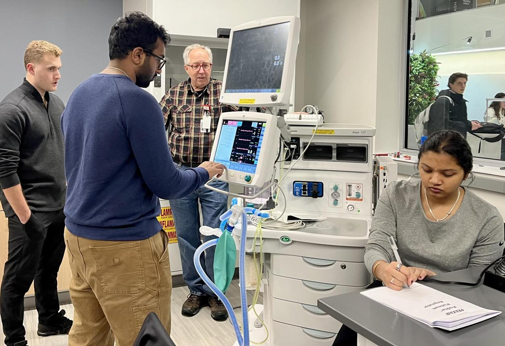

Student & Fresher Practical Training
Don't Just Graduate. Become Industry-Ready.
HMS practical training helps biomedical engineering students and fresh graduates connect classroom knowledge with real equipment and hospital engineering practices.
The program focuses on supervised exposure, systematic troubleshooting and understanding biomedical operations.
Talk to HMS →
Learn the Theory. Experience the Equipment.
Connect Theory With Practice
Connect classroom concepts with practical equipment and hospital engineering activities.
Hands-On Exposure
Gain supervised exposure to real medical equipment and biomedical engineering practices.
Systematic Troubleshooting
Develop an understanding of systematic approaches to equipment troubleshooting.
Industry Readiness
Build practical awareness of biomedical operations, documentation and safety.
Medical Equipment Fundamentals
Build fundamental understanding of medical equipment and biomedical engineering concepts.
Equipment Identification, Operation & Accessories
Understand equipment identification, basic operation and associated accessories.
Preventive Maintenance Procedures
Learn the fundamentals of preventive maintenance procedures for medical equipment.
Troubleshooting Fundamentals
Develop basic understanding of systematic equipment troubleshooting.
Hospital Biomedical Operations
Understand how biomedical engineering activities operate within a hospital environment.
Service Reports, Documentation & Safety
Learn the importance of service reports, documentation and safe working practices.
College Knowledge → Hands-On Training → Hospital Exposure → Career Readiness
College Knowledge
Build on the biomedical engineering concepts learned through academics.
Hands-On Training
Gain supervised practical exposure to medical equipment.
Hospital Exposure
Understand real hospital biomedical engineering practices and operations.
Career Readiness
Develop practical awareness that supports industry readiness.
Ready to take your biomedical engineering knowledge beyond the classroom?
Contact HMS for the latest training schedule and registration details.
Talk to HMS →